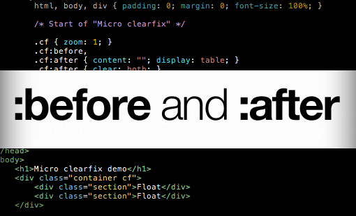

Статьи по веб-программированию
Раздел CSS
WebFonts и FontFaceObserver подгрузка шрифтов
WebFonts - это технология использования сторонних шрифтов

CSS псевдоклассы vs псевдоэлементы
Основные моменты
Раздел PHP/Node.js
Интересно, можно ли сравнить эти два языка, или нельзя?
Раздел Git
Подготавливаем консоль к работе с GitHub, основной процесс работы